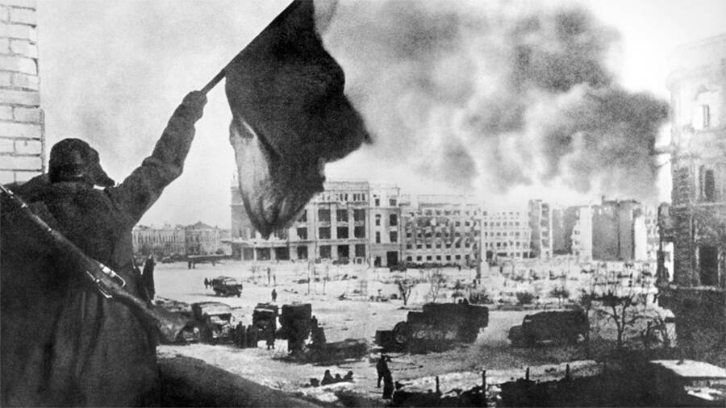
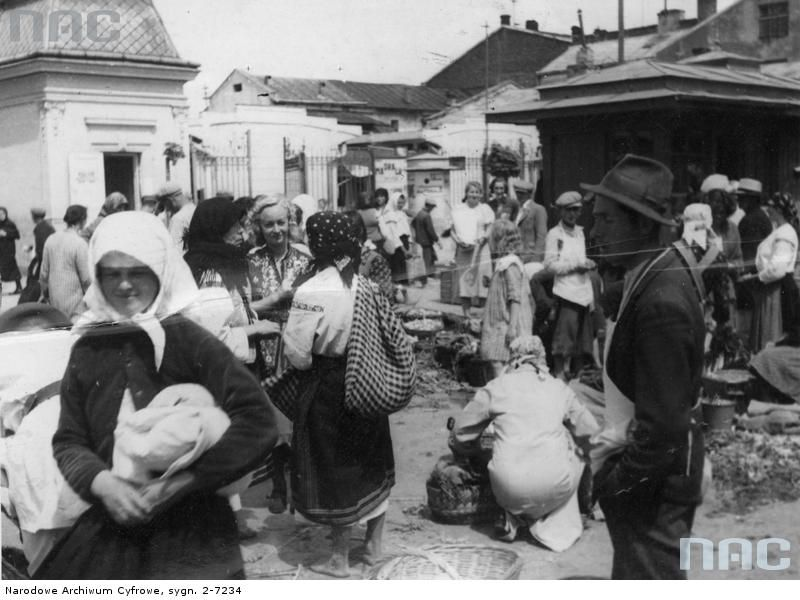
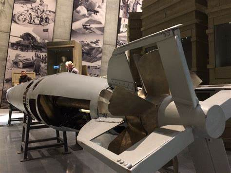

1. Bitwy i Fronty
Wystawa przedstawia największe bitwy, takie jak bitwa o Stalingrad, lądowanie w Normandii i walki na Pacyfiku.

2. Codzienne życie cywilów
Jak wyglądało życie ludności cywilnej podczas wojny? Przedstawiamy realia okupacji, braków żywności i codziennego strachu.

3. Technika i uzbrojenie
W tej wystawie pokazujemy samoloty, czołgi i broń używaną przez różne armie podczas II wojny światowej.
